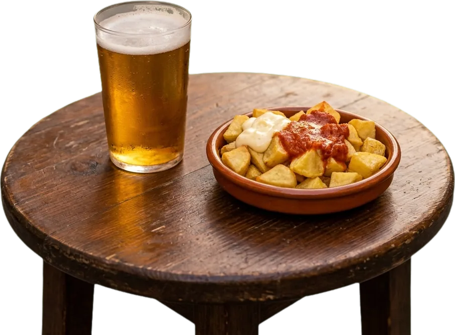

Tři nová „slunce“: kam na jídlo podle Guía Repsol 2026
Španělsko má vlastního průvodce po restauracích a místo hvězdiček rozdává slunce. Letos přibyly tři restaurace s nejvyšším hodnocením. Paco to komentuje po svém.

Guía Repsol je španělský průvodce po restauracích. Hodnotí je slunci, soles: jedno, dvě, nebo tři. Tři slunce jsou to nejvyšší, co může podnik dostat.
Vydání 2026 bylo představeno v Tarragoně. Nejvyšší ocenění nově získaly tři restaurace:
- A Tafona v Santiagu de Compostela, kde vaří šéfkuchařka Lucía Freitas,
- Ramón Freixa Atelier v Madridu, malý bar jen pro deset hostů,
- Voro v Capdepeře na Mallorce se šéfkuchařem Álvarem Salazarem.
Celkem má teď tři slunce 46 restaurací. Pokud počítáme všechny podniky s aspoň jedním sluncem, je jich 808. Nejvíc sluncí má Katalánsko (122), druhý je Madrid (98).
Proč to zmiňujeme v kurzu španělštiny? Protože jídlo je ve Španělsku téma číslo jedna. Když se naučíš pár slov z jídelního lístku, rozumíš polovině rozhovorů u stolu.
Mezitím u Lucíe
LucíaPaco, ¿sabes que hay tres restaurantes nuevos con tres soles?
Paco¿Tres soles? Yo con uno en la playa me apaño.
LucíaSon restaurantes muy buenos, hombre.
PacoPues mis tomates también merecen un sol. ¡Uno pequeñito!
Lucía: „Paco, víš, že jsou tři nové restaurace se třemi slunci?“ Paco: „Tři slunce? Mně stačí jedno na pláži.“ Lucía: „To jsou moc dobré restaurace, člověče.“ Paco: „Moje rajčata si taky zaslouží slunce. Aspoň malinké!“
Slovíčka k článku
- el solslunce (i ocenění v Guía Repsol)
- el restauranterestaurace
- el cocinero / la cocinerakuchař / kuchařka
- la cartajídelní lístek
- reservar una mesazarezervovat stůl
- ¡Qué rico!To je dobré!
- apañarsevystačit si (hovorově)
Chceš takhle španělštinu každý den? 7 krátkých lekcí z Málagy zdarma, stačí e-mail.
Chci 7 lekcí zdarma